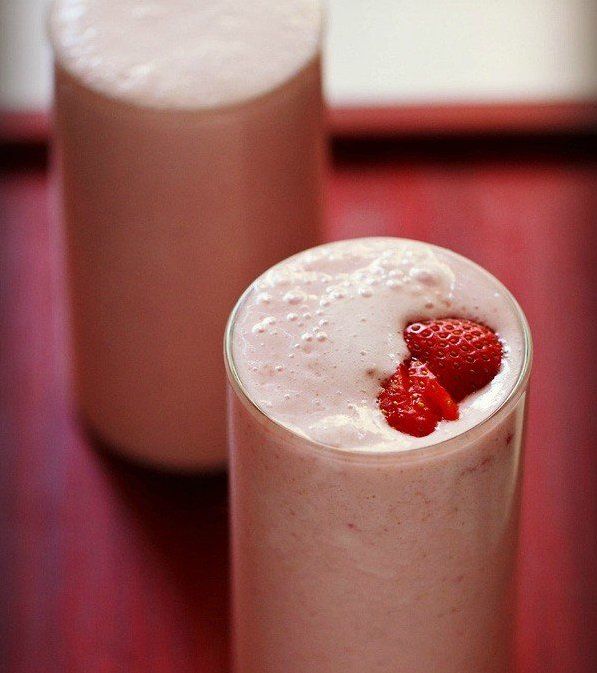

Strawberry Milkshake Recipe

Strawberry milkshake is a refreshing healthy drink to recharge your energy levels. Good for kids as well
as a breakfast beverage.
If you get sweet strawberries then its best as we don’t need to add any sugar. Otherwise, add sugar as
required. You can serve the milkshake plain or add a scoop of vanilla ice cream or strawberry ice cream
and have a strawberry ice cream shake.
Ingredients
250 grams strawberries or 22 to 25 small to medium strawberries
2 cups chilled milk, 500 ml, you can also add 2.5 cups milk
3 to 4 tablespoon sugar or add as required (optional)
Instructions
First rinse the strawberries and then drain them.
Slice off the green leafy part from all the strawberries. This is also called as hulling. Then chop the
strawberries.
Add the chopped strawberries to a blender jar along with 2 cups chilled milk.
Add 3 tbsp sugar or as required. If the strawberries are very sweet, then you don't need to add any
sugar.
Blend till smooth.
Pour in tall glasses and serve strawberry milkshake immediately. You can also add a scoop of vanilla ice
cream or strawberry ice cream and have a strawberry ice cream shake.